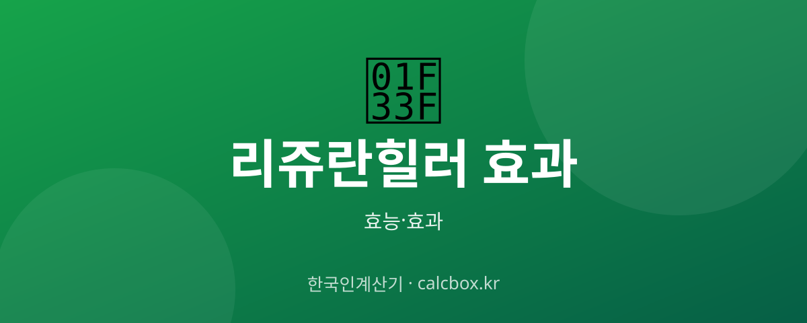

리쥬란힐러 효과 — 연어 PDRN 스킨부스터의 효과와 시술 주기
피부과 인기 시술 리쥬란힐러. 연어에서 온 PDRN 성분이 피부에 어떤 도움을 주는지, 몇 번 받아야 하는지 정리했습니다.

리쥬란힐러 개요 — 어떤 것인가요?
리쥬란힐러는 연어 등에서 추출한 PDRN/PN(폴리뉴클레오타이드) 성분을 피부에 주입하는 스킨부스터 시술입니다. 피부 자체의 재생 환경을 개선하는 것을 목표로 합니다.
리쥬란힐러 주요 효능·효과
- 피부 재생 유도 — PDRN 성분이 피부 재생 환경을 도와 결·탄력 개선을 기대합니다.
- 탄력·잔주름 — 미세 주름과 탄력 개선 목적으로 활용됩니다.
- 피부결 개선 — 칙칙함·거친 결 개선을 목표로 합니다.
섭취·사용 방법과 권장량
보통 2~4주 간격으로 3~4회를 한 코스로 진행하고, 이후 유지 관리 시술을 받습니다. 개인 피부 상태에 따라 주기·횟수는 달라집니다.
주의사항·부작용
시술 후 붓기·붉은기·주사 자국이 며칠 있을 수 있습니다. 반드시 의료기관(피부과)에서 전문의 상담 후 시술받고, 시술 부위 자극·사우나·음주는 며칠 피하세요. 효과·부작용은 개인차가 큽니다.
자주 묻는 질문 (FAQ)
Q. 리쥬란힐러는 몇 번 받아야 하나요?
보통 2~4주 간격으로 3~4회를 한 코스로 진행한 뒤 유지 관리를 받습니다. 피부 상태에 따라 횟수·주기는 달라지므로 전문의와 상담하세요.
Q. 리쥬란힐러 시술 후 다운타임이 있나요?
주입 부위에 붓기·붉은기·작은 자국이 며칠 있을 수 있습니다. 시술 후 며칠은 사우나·음주·강한 자극을 피하세요.
Q. 리쥬란과 필러는 뭐가 다른가요?
필러는 볼륨을 채우는 목적, 리쥬란힐러는 피부 재생 환경 개선(결·탄력)을 목표로 하는 스킨부스터입니다. 목적이 다릅니다.